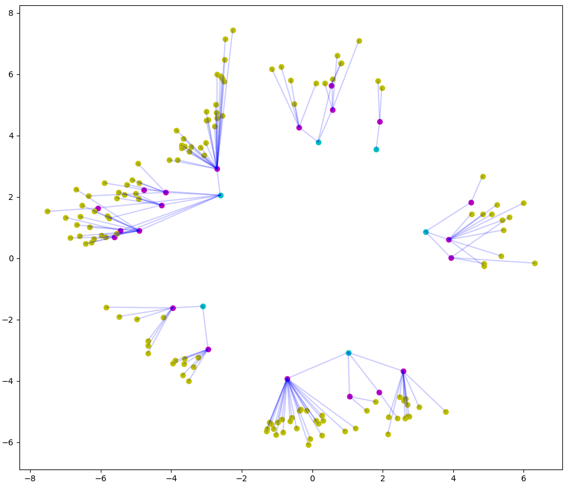

Representation Learning
 ETHEC dataset’s label hierarchy
ETHEC dataset’s label hierarchy
Publications
- Learning Representations for Images With Hierarchical Labels
- Hierarchical Image Classification Using Entailment Cone Embeddings
I worked on my Master thesis at Andreas Krause’s Learning and Adaptive Systems Group@ETH-Zurich supervised by Anastasia Makarova, Octavian Eugen-Ganea and Dario Pavllo.
The project works on using external information in the form of leveraging hierarchy formed by labels to aid image classification. The work compares two different types of models: CNN-based models and Euclidean + non-Euclidean embedding-based models.
CNN-based models
Instead of proposing special modules, the CNN-based models exploit the hierarchy using loss functions that incorporate this hierarchical information in different degrees.
Euclidean and Non-Euclidean embeddings
Euclidean and non-Euclidean embedding models are taken from natural language processing (NLP) where they are hugely prevalent. We propose to use these models for computer vision and images by learning representation in joint-embedding spaces for both concepts and images.

Predicting Taxonomy for Organisms
One of the main applications of this work is to assist natural history collections, museums and organizations that preserve large numbers of historical and extant biodiversity specimens to digitize and organize their collections. Hobbyists create their personal collections most of which are eventually donated to public institutions. Before integration, these specimens need to be sorted taxonomically by specialists who have little time and are expensive. If this resource intensive task could be preceded by a pre-sorting procedure, for instance, where these specimens are categorized by unskilled labour based on their family, sub-family, genus, and species it would expedite and economize the process.
Thanks to the The ETH Library Lab and Michael Greeff the research conducted on the thesis will be turned into classification app that can be used by hobbyists, collectors, and researchers alike to speed up and economize classification and segregation of entomological specimens.